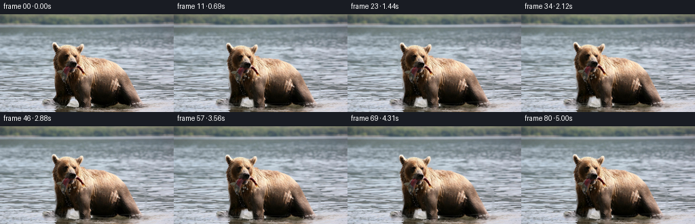
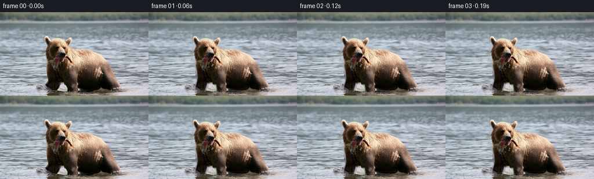
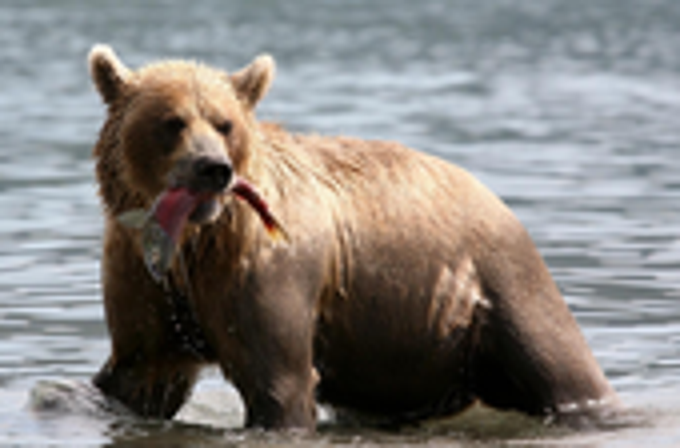
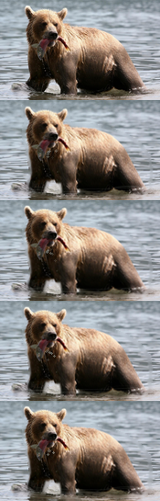

CODING AGENTS AS PIXEL WORLD MODELS
traex/GPT-5.6-Sol · 0872_s1
点击播放 · 原生 RGB 像素
逐轮保存的候选
回放视频、检查图与代码变化。
每份候选均可单独播放。实际图片检查记录在下方工具轨迹中。
候选 01播放与检查图
点击播放 · 原生 RGB 像素

展开代码变化
--- 上一保存版本
+++ 本次保存版本
@@ -0,0 +1,153 @@
+from pathlib import Path
+import numpy as np
+import cv2
+from PIL import Image
+import artifact_io
+
+ROOT = Path(__file__).resolve().parent
+N, H, W = 81, 144, 256
+FPS = 16
+
+
+def soft_bear_mask():
+ """A hand fitted, antialiased silhouette for the animal and its catch."""
+ s = 4
+ m = np.zeros((H*s, W*s), np.uint8)
+ def poly(points):
+ cv2.fillPoly(m, [np.array([(x*s,y*s) for x,y in points], np.int32)], 255, lineType=cv2.LINE_AA)
+ def ellipse(c, axes, angle=0):
+ cv2.ellipse(m, (int(c[0]*s),int(c[1]*s)), (int(axes[0]*s),int(axes[1]*s)), angle, 0, 360, 255, -1, cv2.LINE_AA)
+ # torso, shoulder and rump
+ ellipse((151,99),(63,35),10)
+ ellipse((176,108),(39,29),18)
+ # neck and head
+ ellipse((109,88),(28,37),-12)
+ ellipse((99,72),(22,28),0)
+ # ears
+ ellipse((84,51),(7,11),-35); ellipse((116,52),(7,11),35)
+ # forelegs and the visible rear leg
+ poly([(82,86),(104,87),(103,117),(96,137),(80,135),(85,113)])
+ poly([(111,91),(136,94),(140,120),(136,141),(119,140),(116,119)])
+ poly([(184,103),(207,106),(214,130),(205,138),(189,134)])
+ # fish/tongue silhouette outside the muzzle
+ poly([(91,75),(103,72),(115,78),(126,75),(143,90),(136,96),(123,85),(111,89),(101,100),(91,94)])
+ m = cv2.resize(m, (W,H), interpolation=cv2.INTER_AREA)
+ return cv2.GaussianBlur(m.astype(np.float32)/255.0, (0,0), .7)
+
+
+def remap_rgb(img, mapx, mapy, border=cv2.BORDER_REFLECT_101):
+ return cv2.remap(img, mapx.astype(np.float32), mapy.astype(np.float32), cv2.INTER_CUBIC,
+ borderMode=border)
+
+
+def ripple_layer(i, t):
+ """Transparent, fine highlights and shadows on the disturbed shallows."""
+ lay = np.zeros((H,W,4), np.uint8)
+ # contact rings: their phase continuously cycles, with different origins.
+ rings = [(91,134,0.00,30,7),(128,138,.37,25,6),(193,132,.71,31,6)]
+ for cx,cy,off,maxrx,thick in rings:
+ phase = (t*.58 + off) % 1.0
+ rx = 7 + maxrx*phase
+ ry = 1.2 + 4.2*phase
+ fade = int(68*(1-phase)**1.1)
+ # dark underside then bright crest, both very restrained
+ cv2.ellipse(lay, (cx,cy), (int(rx),max(1,int(ry))), 0, 182, 356,
+ (30,42,39,fade//2), 1, cv2.LINE_AA)
+ cv2.ellipse(lay, (cx,cy-1), (int(rx),max(1,int(ry))), 0, 190, 350,
+ (205,214,207,fade), 1, cv2.LINE_AA)
+ # low wakes radiating sideways from the bear
+ for k in range(5):
+ y = 127 + k*3 + int(.6*np.sin(t*2.0+k))
+ shift = int(2.0*np.sin(t*1.1+k*.8))
+ alpha = 18 + 3*k
+ cv2.ellipse(lay,(146+shift,y),(61+6*k,4+k//2),0,8,172,(219,222,212,alpha),1,cv2.LINE_AA)
+ return lay
+
+
+def alpha_over(base, layer):
+ a = layer[...,3:4].astype(np.float32)/255.0
+ return np.clip(base.astype(np.float32)*(1-a)+layer[...,:3].astype(np.float32)*a,0,255).astype(np.uint8)
+
+
+def main():
+ src = np.array(Image.open(ROOT/'first_frame.png').convert('RGB'))
+ assert src.shape == (H,W,3)
+ bear_a = soft_bear_mask()
+
+ # Remove the animal beneath its matte, so tiny body bobs reveal water, not a duplicate edge.
+ hard = (bear_a > .18).astype(np.uint8)*255
+ hard = cv2.dilate(hard, np.ones((5,5),np.uint8), iterations=1)
+ bg_bgr = cv2.inpaint(cv2.cvtColor(src,cv2.COLOR_RGB2BGR), hard, 5, cv2.INPAINT_TELEA)
+ bg = cv2.cvtColor(bg_bgr,cv2.COLOR_BGR2RGB)
+
+ yy,xx = np.mgrid[0:H,0:W].astype(np.float32)
+ frames=[]
+ rng = np.random.default_rng(872)
+ # fixed droplet properties create temporally coherent falling beads
+ drops=[]
+ for d in range(11):
+ drops.append((rng.uniform(0,1), rng.uniform(-5,5), rng.uniform(7,16), rng.uniform(.7,1.25)))
+
+ for i in range(N):
+ if i == 0:
+ frames.append(src.copy())
+ continue
+ t=i/FPS
+ ramp=1.0-np.exp(-i/8.0)
+
+ # Water moves in long horizontal bands; distant water moves less than foreground.
+ water_depth=np.clip((yy-24)/120,0,1)
+ dx=(.42*np.sin(yy*.22+t*1.25)-.42*np.sin(yy*.22))*water_depth
+ dx+=(.22*np.sin(yy*.51-t*.85)-.22*np.sin(yy*.51))*water_depth
+ dy=(.18*np.sin(xx*.055+t*.95)-.18*np.sin(xx*.055))*water_depth
+ moving_bg=remap_rgb(bg,xx-dx,yy-dy)
+ # Keep the tree line still and retain some source texture everywhere.
+ blend=np.clip((yy-22)/15,0,1)[...,None]*.88
+ canvas=(src.astype(np.float32)*(1-blend)+moving_bg.astype(np.float32)*blend).astype(np.uint8)
+
+ # Coherent organic deformation: a gentle wading bob, slower breathing in the torso,
+ # and a small independent nod/twitch concentrated around head and fish.
+ global_dx=-1.15*(i/(N-1)) + .23*np.sin(t*1.22)
+ global_dy=.60*np.sin(t*2.03)
+ head=np.exp(-(((xx-102)/31)**2+((yy-72)/31)**2))
+ chest=np.exp(-(((xx-151)/53)**2+((yy-94)/39)**2))
+ fish=np.exp(-(((xx-130)/16)**2+((yy-85)/11)**2))
+ leg=np.exp(-(((xx-87)/18)**2+((yy-121)/23)**2))
+ disp_x=global_dx + head*(.42*np.sin(t*1.65)) + chest*(.30*np.sin(t*1.08))
+ disp_y=global_dy + head*(.62*np.sin(t*1.48)) + chest*(.26*np.sin(t*1.08))
+ disp_y+=fish*(1.25*np.sin(t*3.45))*ramp
+ disp_x+=fish*(.45*np.sin(t*2.7))*ramp
+ disp_y+=leg*(.42*np.sin(t*2.35))*ramp
+ bx=xx-disp_x; by=yy-disp_y
+ moved=remap_rgb(src,bx,by)
+ ma=cv2.remap(bear_a.astype(np.float32),bx.astype(np.float32),by.astype(np.float32),cv2.INTER_LINEAR,
+ borderMode=cv2.BORDER_CONSTANT,borderValue=0)
+ # slightly firmer core and natural one-pixel feather
+ ma=np.clip(ma,0,1)[...,None]
+ canvas=np.clip(canvas.astype(np.float32)*(1-ma)+moved.astype(np.float32)*ma,0,255).astype(np.uint8)
+
+ # Tiny falling water beads beneath the muzzle. They blink softly rather than reading as graphics.
+ droplayer=np.zeros((H,W,4),np.uint8)
+ for phase,ox,fall,rad in drops:
+ u=(t*.68+phase)%1.0
+ if u < .64:
+ v=u/.64
+ x=int(107+global_dx+ox+1.7*np.sin(v*3+phase*6))
+ y=int(89+global_dy+fall*v*v)
+ alpha=int(105*np.sin(np.pi*v))
+ cv2.circle(droplayer,(x,y),max(1,int(rad)),(205,218,211,alpha),-1,cv2.LINE_AA)
+ canvas=alpha_over(canvas,droplayer)
+ canvas=alpha_over(canvas,ripple_layer(i,t))
+
+ # Restrained changing daylight glint on the wet right shoulder.
+ glint=np.exp(-(((xx-158)/48)**2+((yy-79)/25)**2))[...,None]
+ light=.012*np.sin(t*.72)*ramp*glint
+ canvas=np.clip(canvas.astype(np.float32)*(1+light),0,255).astype(np.uint8)
+ frames.append(canvas)
+
+ arr=np.stack(frames).astype(np.uint8)
+ assert np.array_equal(arr[0],src)
+ artifact_io.save(arr,ROOT)
+
+if __name__=='__main__':
+ main()
候选 02播放与检查图
点击播放 · 原生 RGB 像素


展开代码变化
--- 上一保存版本
+++ 本次保存版本
@@ -128,14 +128,14 @@
# Tiny falling water beads beneath the muzzle. They blink softly rather than reading as graphics.
droplayer=np.zeros((H,W,4),np.uint8)
- for phase,ox,fall,rad in drops:
+ for phase,ox,fall,rad in drops[:6]:
u=(t*.68+phase)%1.0
if u < .64:
v=u/.64
x=int(107+global_dx+ox+1.7*np.sin(v*3+phase*6))
y=int(89+global_dy+fall*v*v)
- alpha=int(105*np.sin(np.pi*v))
- cv2.circle(droplayer,(x,y),max(1,int(rad)),(205,218,211,alpha),-1,cv2.LINE_AA)
+ alpha=int(50*np.sin(np.pi*v))
+ cv2.line(droplayer,(x,y),(x,y+1),(195,210,205,alpha),1,cv2.LINE_AA)
canvas=alpha_over(canvas,droplayer)
canvas=alpha_over(canvas,ripple_layer(i,t))
候选 03播放与检查图
可观测工具轨迹
实际执行的命令与返回图片。
命令 1exit 0
/bin/bash -lc 'cat GENERATION_RULES.md'
命令 2exit 0
/bin/bash -lc "cat prompt.txt && printf '\\n---FILES---\\n' && find . -maxdepth 2 -type f -printf '%p\\n' | sort"
命令 3exit 0
/bin/bash -lc "cat task_spec.json && sed -n '1,240p' artifact_io.py"
命令 4exit 0
/bin/bash -lc "python - <<'PY'
from PIL import Image
im=Image.open('first_frame.png')
print(im.mode, im.size)
PY"命令 5exit 0
/bin/bash -lc "python - <<'PY'
from PIL import Image
im=Image.open('first_frame.png'); im.crop((55,30,225,142)).resize((680,448)).save('crop.png')
PY"命令 6exit 0
/bin/bash -lc "python - <<'PY'
try:
import cv2; print('cv2',cv2.__version__)
except Exception as e: print('no cv2',e)
try:
import scipy; print('scipy',scipy.__version__)
except Exception as e: print('no scipy',e)
PY"命令 7exit 0
/bin/bash -lc "python - <<'PY'
from PIL import Image
import numpy as np
im=np.array(Image.open('first_frame.png'))
for y in range(65,105):
xs=[]
for x in range(80,145):
r,g,b=im[y,x]
if r>70 and r>g*1.3 and r>b*1.15: xs.append(x)
if xs: print(y,min(xs),max(xs),len(xs))
PY"命令 8exit 0
/bin/bash -lc "cat > generate.py <<'PY'
from pathlib import Path
import numpy as np
import cv2
from PIL import Image
import artifact_io
ROOT = Path(__file__).resolve().parent
N, H, W = 81, 144, 256
FPS = 16
def soft_bear_mask():
\"\"\"A hand fitted, antialiased silhouette for the animal and its catch.\"\"\"
s = 4
m = np.zeros((H*s, W*s), np.uint8)
def poly(points):
cv2.fillPoly(m, [np.array([(x*s,y*s) for x,y in points], np.int32)], 255, lineType=cv2.LINE_AA)
def ellipse(c, axes, angle=0):
cv2.ellipse(m, (int(c[0]*s),int(c[1]*s)), (int(axes[0]*s),int(axes[1]*s)), angle, 0, 360, 255, -1, cv2.LINE_AA)
# torso, shoulder and rump
ellipse((151,99),(63,35),10)
ellipse((176,108),(39,29),18)
# neck and head
ellipse((109,88),(28,37),-12)
ellipse((99,72),(22,28),0)
# ears
ellipse((84,51),(7,11),-35); ellipse((116,52),(7,11),35)
# forelegs and the visible rear leg
poly([(82,86),(104,87),(103,117),(96,137),(80,135),(85,113)])
poly([(111,91),(136,94),(140,120),(136,141),(119,140),(116,119)])
poly([(184,103),(207,106),(214,130),(205,138),(189,134)])
# fish/tongue silhouette outside the muzzle
poly([(91,75),(103,72),(115,78),(126,75),(143,90),(136,96),(123,85),(111,89),(101,100),(91,94)])
m = cv2.resize(m, (W,H), interpolation=cv2.INTER_AREA)
return cv2.GaussianBlur(m.astype(np.float32)/255.0, (0,0), .7)
def remap_rgb(img, mapx, mapy, border=cv2.BORDER_REFLECT_101):
return cv2.remap(img, mapx.astype(np.float32), mapy.astype(np.float32), cv2.INTER_CUBIC,
borderMode=border)
def ripple_layer(i, t):
\"\"\"Transparent, fine highlights and shadows on the disturbed shallows.\"\"\"
lay = np.zeros((H,W,4), np.uint8)
# contact rings: their phase continuously cycles, with different origins.
rings = [(91,134,0.00,30,7),(128,138,.37,25,6),(193,132,.71,31,6)]
for cx,cy,off,maxrx,thick in rings:
phase = (t*.58 + off) % 1.0
rx = 7 + maxrx*phase
ry = 1.2 + 4.2*phase
fade = int(68*(1-phase)**1.1)
# dark underside then bright crest, both very restrained
cv2.ellipse(lay, (cx,cy), (int(rx),max(1,int(ry))), 0, 182, 356,
(30,42,39,fade//2), 1, cv2.LINE_AA)
cv2.ellipse(lay, (cx,cy-1), (int(rx),max(1,int(ry))), 0, 190, 350,
(205,214,207,fade), 1, cv2.LINE_AA)
# low wakes radiating sideways from the bear
for k in range(5):
y = 127 + k*3 + int(.6*np.sin(t*2.0+k))
shift = int(2.0*np.sin(t*1.1+k*.8))
alpha = 18 + 3*k
cv2.ellipse(lay,(146+shift,y),(61+6*k,4+k//2),0,8,172,(219,222,212,alpha),1,cv2.LINE_AA)
return lay
def alpha_over(base, layer):
a = layer[...,3:4].astype(np.float32)/255.0
return np.clip(base.astype(np.float32)*(1-a)+layer[...,:3].astype(np.float32)*a,0,255).astype(np.uint8)
def main():
src = np.array(Image.open(ROOT/'first_frame.png').convert('RGB'))
assert src.shape == (H,W,3)
bear_a = soft_bear_mask()
# Remove the animal beneath its matte, so tiny body bobs reveal water, not a duplicate edge.
hard = (bear_a > .18).astype(np.uint8)*255
hard = cv2.dilate(hard, np.ones((5,5),np.uint8), iterations=1)
bg_bgr = cv2.inpaint(cv2.cvtColor(src,cv2.COLOR_RGB2BGR), hard, 5, cv2.INPAINT_TELEA)
bg = cv2.cvtColor(bg_bgr,cv2.COLOR_BGR2RGB)
yy,xx = np.mgrid[0:H,0:W].astype(np.float32)
frames=[]
rng = np.random.default_rng(872)
# fixed droplet properties create temporally coherent falling beads
drops=[]
for d in range(11):
drops.append((rng.uniform(0,1), rng.uniform(-5,5), rng.uniform(7,16), rng.uniform(.7,1.25)))
for i in range(N):
if i == 0:
frames.append(src.copy())
continue
t=i/FPS
ramp=1.0-np.exp(-i/8.0)
# Water moves in long horizontal bands; distant water moves less than foreground.
water_depth=np.clip((yy-24)/120,0,1)
dx=(.42*np.sin(yy*.22+t*1.25)-.42*np.sin(yy*.22))*water_depth
dx+=(.22*np.sin(yy*.51-t*.85)-.22*np.sin(yy*.51))*water_depth
dy=(.18*np.sin(xx*.055+t*.95)-.18*np.sin(xx*.055))*water_depth
moving_bg=remap_rgb(bg,xx-dx,yy-dy)
# Keep the tree line still and retain some source texture everywhere.
blend=np.clip((yy-22)/15,0,1)[...,None]*.88
canvas=(src.astype(np.float32)*(1-blend)+moving_bg.astype(np.float32)*blend).astype(np.uint8)
# Coherent organic deformation: a gentle wading bob, slower breathing in the torso,
# and a small independent nod/twitch concentrated around head and fish.
global_dx=-1.15*(i/(N-1)) + .23*np.sin(t*1.22)
global_dy=.60*np.sin(t*2.03)
head=np.exp(-(((xx-102)/31)**2+((yy-72)/31)**2))
chest=np.exp(-(((xx-151)/53)**2+((yy-94)/39)**2))
fish=np.exp(-(((xx-130)/16)**2+((yy-85)/11)**2))
leg=np.exp(-(((xx-87)/18)**2+((yy-121)/23)**2))
disp_x=global_dx + head*(.42*np.sin(t*1.65)) + chest*(.30*np.sin(t*1.08))
disp_y=global_dy + head*(.62*np.sin(t*1.48)) + chest*(.26*np.sin(t*1.08))
disp_y+=fish*(1.25*np.sin(t*3.45))*ramp
disp_x+=fish*(.45*np.sin(t*2.7))*ramp
disp_y+=leg*(.42*np.sin(t*2.35))*ramp
bx=xx-disp_x; by=yy-disp_y
moved=remap_rgb(src,bx,by)
ma=cv2.remap(bear_a.astype(np.float32),bx.astype(np.float32),by.astype(np.float32),cv2.INTER_LINEAR,
borderMode=cv2.BORDER_CONSTANT,borderValue=0)
# slightly firmer core and natural one-pixel feather
ma=np.clip(ma,0,1)[...,None]
canvas=np.clip(canvas.astype(np.float32)*(1-ma)+moved.astype(np.float32)*ma,0,255).astype(np.uint8)
# Tiny falling water beads beneath the muzzle. They blink softly rather than reading as graphics.
droplayer=np.zeros((H,W,4),np.uint8)
for phase,ox,fall,rad in drops:
u=(t*.68+phase)%1.0
if u < .64:
v=u/.64
x=int(107+global_dx+ox+1.7*np.sin(v*3+phase*6))
y=int(89+global_dy+fall*v*v)
alpha=int(105*np.sin(np.pi*v))
cv2.circle(droplayer,(x,y),max(1,int(rad)),(205,218,211,alpha),-1,cv2.LINE_AA)
canvas=alpha_over(canvas,droplayer)
canvas=alpha_over(canvas,ripple_layer(i,t))
# Restrained changing daylight glint on the wet right shoulder.
glint=np.exp(-(((xx-158)/48)**2+((yy-79)/25)**2))[...,None]
light=.012*np.sin(t*.72)*ramp*glint
canvas=np.clip(canvas.astype(np.float32)*(1+light),0,255).astype(np.uint8)
frames.append(canvas)
arr=np.stack(frames).astype(np.uint8)
assert np.array_equal(arr[0],src)
artifact_io.save(arr,ROOT)
if __name__=='__main__':
main()
PY
python generate.py"命令 9exit 0
/bin/bash -lc 'du -sh pixels.npz index.html frames && ls -lh inspection.png pixels.npz index.html'
命令 10exit 0
/bin/bash -lc "python - <<'PY'
import numpy as np
from PIL import Image
fs=[np.array(Image.open(f'frames/{i:02d}.png')).astype(int) for i in range(81)]
for a,b in [(0,1),(0,10),(0,40),(0,80),(40,41)]:
d=np.abs(fs[a]-fs[b]); print(a,b,'mae',d.mean(),'changed',np.mean(np.any(d>0,2)),'p95',np.percentile(d,95),'max',d.max())
print('exact',np.array_equal(fs[0],np.array(Image.open('first_frame.png'))))
PY"命令 11exit 0
/bin/bash -lc "python - <<'PY'
from PIL import Image,ImageDraw
ims=[]
for i in [0,20,40,60,80]:
im=Image.open(f'frames/{i:02d}.png').crop((50,35,225,144)).resize((700,436))
ims.append(im)
out=Image.new('RGB',(700,436*5),(0,0,0))
for j,im in enumerate(ims): out.paste(im,(0,j*436))
out.save('motion_detail.png')
PY"命令 12exit 0
/bin/bash -lc "python generate.py && python - <<'PY'
import numpy as np
from PIL import Image
from pathlib import Path
z=np.load('pixels.npz')['pixels']
im=np.array(Image.open('first_frame.png'))
packed=(im[...,0].astype(np.uint32)<<16)|(im[...,1].astype(np.uint32)<<8)|im[...,2].astype(np.uint32)
assert z.shape==(144,256,81), z.shape
assert np.array_equal(z[:,:,0],packed)
assert len(list(Path('frames').glob('*.png')))==81
assert all(Image.open(f'frames/{i:02d}.png').mode=='RGB' and Image.open(f'frames/{i:02d}.png').size==(256,144) for i in range(81))
for p in ['crop.png','motion_detail.png']:
Path(p).unlink(missing_ok=True)
print('validated', z.shape, z.dtype, Path('pixels.npz').stat().st_size)
PY"视觉工具实际返回图片 1

视觉工具实际返回图片 2

视觉工具实际返回图片 3

视觉工具实际返回图片 4

视觉工具实际返回图片 5

保存候选 3 份；完成命令 12 次；可验证图片返回 5 张。原始 API 响应与完整日志保留在本地。